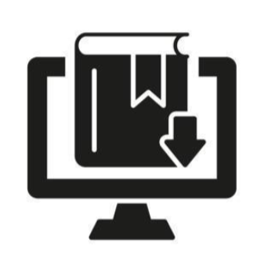
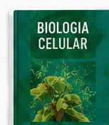
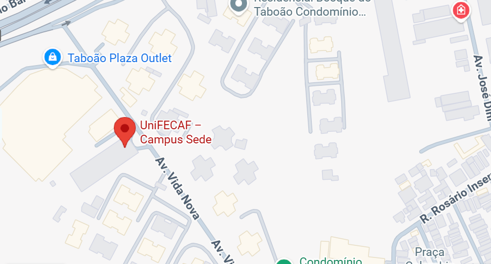

Ambiente virtual
Acesse materiais e conteúdos de apoio às disciplinas.
Conhecimento que conecta
Explore recursos acadêmicos, descubra novas leituras e encontre apoio para sua jornada universitária em um só lugar.
Sobre o projeto
A Biblioteca Digital UniFECAF reúne caminhos para ampliar o repertório acadêmico e apoiar os estudos dentro e fora da sala de aula.
Esta interface organiza os conteúdos em seções claras, com navegação simples, contraste confortável e componentes que se adaptam a diferentes tamanhos de tela.
Conheça os recursosApoio ao aprendizado
Atalhos visuais para encontrar materiais e formatos de estudo.
Acesse materiais e conteúdos de apoio às disciplinas.

Organize referências para projetos, artigos e TCCs.

Conheça alternativas de acesso ao conteúdo.

Amplie seus estudos com leituras complementares.
Aprender transforma
Reserve um momento para explorar, pesquisar e construir conhecimento.
Sugestões de leitura
Uma seleção visual para inspirar sua próxima leitura.

Observação: os cartões são exemplos visuais da interface. Confirme títulos, disponibilidade e links reais do acervo antes de publicar como catálogo oficial.
Presença e apoio
Consulte os canais institucionais para confirmar endereços, horários e serviços disponíveis.

Espaço de apoio à comunidade acadêmica.
Ambiente para estudar e desenvolver projetos.

Consulte informações atualizadas nos canais oficiais.
Fale com a instituição
Para informações sobre acesso ao acervo, serviços e atendimento, consulte os canais oficiais da UniFECAF.
Acessar site oficial